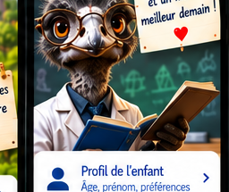
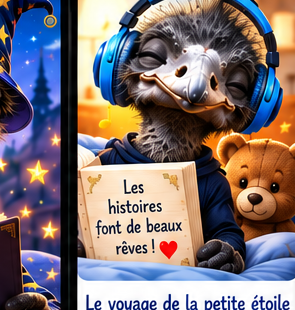
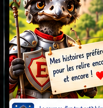

Des histoires pleines d’aventures pour rêver, grandir et s’émerveiller ! ❤️
Pour Nhoa... et autres enfants sage.
« Parce que chaque enfant a une histoire qui compte ! » ❤️

Bastiaan (31) TM
Écoute – 5 à 6 ans

🎧 Histoires audio de super-héros
Une sélection d’histoires adaptées aux enfants de 5 à 6 ans.
Sur iPhone/iPad, les histoires s’ouvrent dans Safari ou dans une nouvelle fenêtre. C’est plus fiable qu’un affichage intégré, car le site externe peut refuser l’intégration dans une PWA.
Bastiaan (31) TM
Aventures – 7 à 8 ans

🦸 Histoires audio de super-héros
Une sélection d’histoires adaptées aux enfants de 7 à 8 ans.
Sur iPhone/iPad, les histoires s’ouvrent dans Safari ou dans une nouvelle fenêtre. C’est plus fiable qu’un affichage intégré, car le site externe peut refuser l’intégration dans une PWA.